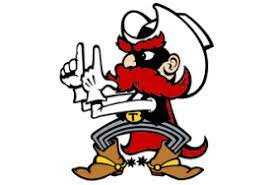
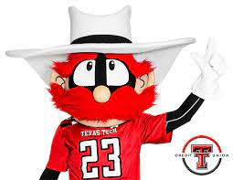

Red Raiders
Mechanicville Jr./Sr. High School is a school located in Halfmoon, New York. Red Raiders is the Mascot of Mechanicville Jr./Sr. High School
The school is part of the Mechanicville City School district and serves the district's sixth through 12th grades.
In 2011, a merger occurred between the high school and the middle school causing the school to now be known
as Mechanicville Jr./Sr. High School.
Fun facts about Red Raiders
- In the early 1970's the Southwest Conference created a rule which forbid live mascots traveling to away games unless the host school approved the mascot.
- The Masked Rider's horse fell into this rule.
- So instead of hoping the horse would be approved each week, Texas Tech created Raider Red as an alternate mascot.
- The Matador Band to the Goin' Band from Raiderland because the band was the first collegiate band to travel to an away game.


Back - index page